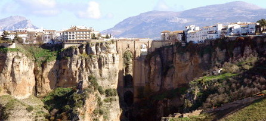
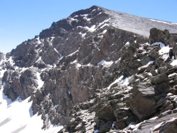
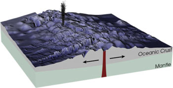

La Tierra
1. El relieve terrestre
Paisaje y relieve
En primer lugar debemos diferenciar entre paisaje y relieve.
El paisaje es cualquier zona de la superficie terrestre, ya sea continental o submarina, que se puede observar y que resulta de la acción de tres factores: el relieve, la vegetación y la intervención del ser humano.
 |
| Paisaje en Andalucía:Tajo de Ronda Imagen de phoenicoperus en Wikimedia Commons bajo Dominio Público |
El relieve es el término que se refiere al conjunto de formas y accidentes geográficos que tiene la corteza terrestre, tanto en relación con las tierras que han emergido (relieve continental) como con el fondo del mar (relieve oceánico).
 |
 |
|
| Relieve continental: montaña del Mulhacén Imagen de Carlos Serra en Wikimedia Commons bajo licencia CC |
Relieve oceánico: dorsal oceánica |
Importante
El relieve es el término que se refiere al conjunto de formas y accidentes geográficos que tiene la corteza terrestre.
El paisaje se refiere a la zona de la superficie terrestre, continental o submarina, que se puede observar y cuyo aspecto resulta de la acción del relieve, la vegetación y la intervención del ser humano.
Agentes geológicos
El relieve terrestre, de manera general, está cambiando lentamente aunque algunos fenómenos de cambio son rápidos, como el producido por los terremotos. Los elementos que causan este cambio en el relieve son los agentes geológicos.
Según su origen, los agentes geológicos se dividen en:
- Agentes geológicos externos. Su origen es la energía del Sol y son todos aquellos que modifican, alteran o transforman la superficie del planeta y la dotan de formas variadas. El viento y el agua son algunos de ellos.
- Agentes geológicos internos, Su origen es la energía interna de la Tierra, y son los factores que modifican el aspecto de la corteza terrestre actuando desde el interior. Los principales agentes geológicos internos son los volcanes y los terremotos o movimientos sísmicos.
En este tema trataremos los agentes geológicos externos, y el siguiente tratará de la acción de los agentes geológicos internos.